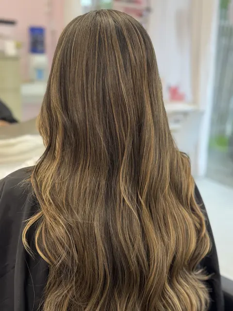
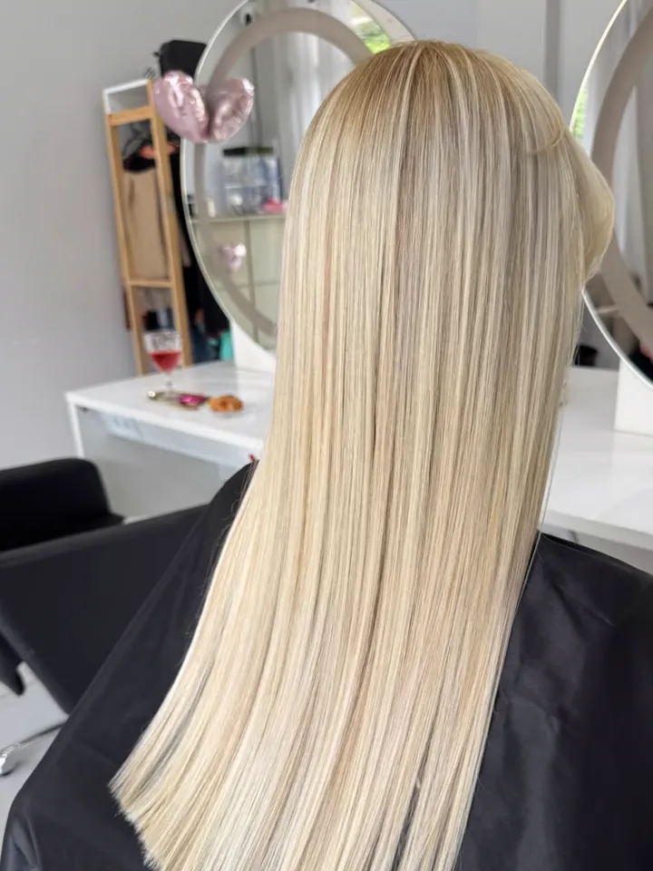
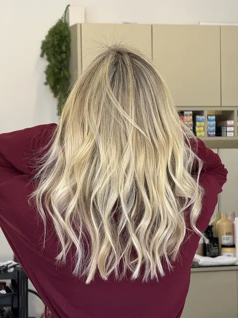
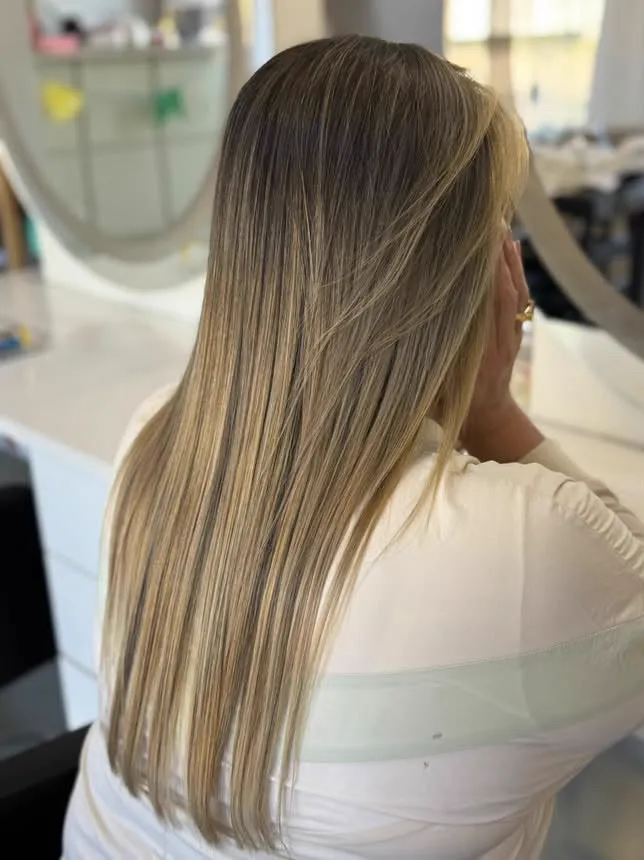

30 a 50%
Mechas Iluminadas
Luz suave e natural, que ilumina o rosto sem mudar tudo. Ótima para quem está começando no loiro.
Início / Loiros
Nossa especialidadeDo iluminado suave ao platinado, cada técnica é escolhida pensando no seu tom de pele, no seu estilo e na saúde dos fios. E todo loiro sai daqui com reconstrução ou botox incluso.

O percentual indica o nível de preenchimento: quanto maior, mais loiro e iluminado fica o resultado.

Luz suave e natural, que ilumina o rosto sem mudar tudo. Ótima para quem está começando no loiro.

Preenchimento de 50% com contorno iluminado no topo, para um loiro de efeito marcante logo na primeira vista.

Loiro luminoso com raiz esfumada, que cresce bonito e pede menos retoques.

O loiro mais claro e preenchido do studio, para quem sonha com o platinado.
Escolha entre reconstrução ou botox para tratar os fios durante o processo. Toque em Agendar para ver os horários livres.
Dúvida entre reconstrução e botox? Leia o nosso guia.

O processo de um loiro feito aqui no studio e alguns dos resultados das nossas clientes.


Depende da técnica e do comprimento do cabelo. Na agenda online você já vê o tempo médio de cada técnica, e o sistema só mostra horários em que o seu atendimento cabe inteiro.
Mande uma foto do seu cabelo e da referência que você gosta no WhatsApp. A gente te orienta sobre a técnica e o preenchimento ideais para você.
A reconstrução repõe a massa do fio e é indicada para cabelos fragilizados. O botox alinha, reduz o frizz e devolve brilho. Explicamos tudo neste artigo.
Sim. Para garantir o horário, pedimos 30% do valor do procedimento, que vira bônus para você usar no salão. As condições são informadas antes do pagamento.
Matizador na medida certa, cronograma capilar e protetor térmico fazem toda a diferença. Veja os 7 cuidados que recomendamos.
